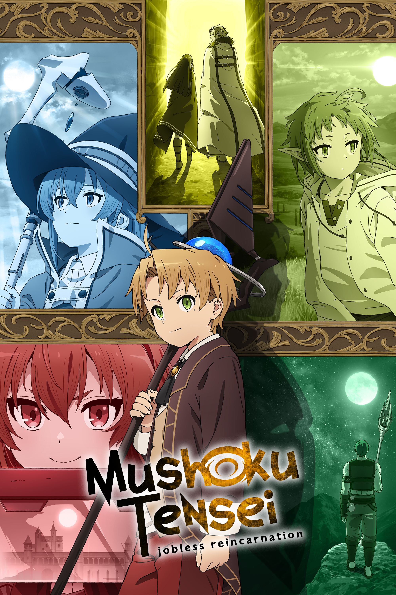

Mushoku Tensei
- Tipo: Serie
- Genero: Isekai
- Emitido: Ene 11 de 2021 a Mar 21 de 2021
- Estado: Concluido
Asesinado mientras salvaba a un extraño de una colisión de tráfico, un NEET de 34 años se reencarna en un mundo de magia como Rudeus Greyrat,
un bebé recién nacido. Con el conocimiento, la experiencia y los lamentos de su vida anterior retenidos, Ludeus promete llevar una vida plena y no repetir sus errores pasados.